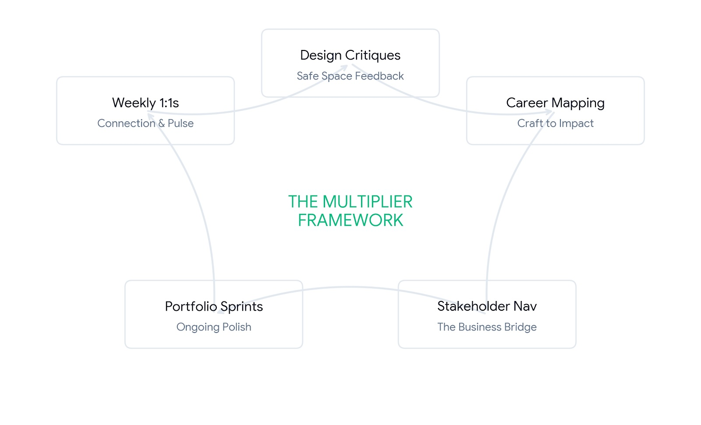

I design clarity into complexity.
Product leader and UX designer in Howell, Michigan. Youth softball coach on weekends.
I've spent 12+ years as a UX designer, and I've learned that the most difficult problems usually require the simplest solutions. My career has been defined by taking messy, high-stakes enterprise workflows and turning them into intuitive experiences that drive business value.
At companies like Autodesk and Quicken Loans, I've led global design teams to deliver product visions that move the needle. During my time at Autodesk, I led the UX strategy for major releases that helped grow revenue from $1.54B to $2.27B over three years. I don't just focus on the pixels; I focus on stakeholder alignment, strategic storytelling, and building the relationships needed to get complex features out the door.
I believe being a Principal Designer is as much about mentorship as it is about design. I've managed vendors, coached junior designers, and standardized design processes to make high-quality work repeatable across large organizations.
When I'm not at my desk, you'll usually find me on the field coaching youth softball. Leading a team of young athletes isn't all that different from leading a design team. Both need a clear vision, consistent encouragement, and a deep belief that we win or lose together.
The toolbox
Good design is more than how things look. These are the tools I use to get teams on the same page and build better software.
Journey mapping
In industrial software, the user experience starts long before someone clicks a button. I map out the entire ecosystem, including the handoffs between people, internal processes, and the tech stack. This helps me see where the real friction lives.
Identified a data silo issue that was causing a 65% delay in factory planning cycles.
Learning from users
I don't just ask users what they want. I watch what they do when the software fails them. Whether it's one-on-one interviews or large-scale surveys, I turn thousands of raw data points into a clear path for the product team.
Developed a Lighthouse Customer program that provided a direct feedback loop for the Drawing Automation project.
Making it scale
Design systems are useless if they aren't used. I set up the rules, workflows, and communication channels that let massive, global teams build consistent software at speed.
Standardized UI components across global teams, reducing design-to-development handoff time.
Solving complexity
I specialize in “spaghetti” systems, software that has grown too complex for its own good, and reorganizing the information so it finally makes sense to a human being again.
Reduced cognitive load in legacy engineering tools by automating 40% of manual drafting tasks.
Future visioning
I use storyboards and prototypes to show a team not just what we're building today, but where the product will be in three years. It's the best tool I know for getting executives and engineers on the same page.
Aligned a division VP and other stakeholders on a multi-year cloud strategy.
Alignment workshops
Innovation happens when everyone feels safe enough to disagree. I lead sessions that bridge the gap between technical limits and business goals, so we all move in one direction.
Used a disagree-and-commit framework to keep the Drawing Automation MVP on schedule despite stakeholder friction.
Leading with intention.
Great software starts with healthy teams. I use my 12+ years of experience to help designers find their voice and help businesses find their path.
From craft to impact
I help designers move beyond just completing tasks, so they become true strategic partners who understand how their work affects the business and the people using it.
The bridge to business
I help executives and product leaders understand the “why” behind design. By showing how user needs drive product success, I make sure design has a seat at the table from day one.
A safe space to win
I treat team chemistry like I treat softball coaching: I create a space where it's safe to try new things and learn from mistakes, and clear the hurdles so the team can perform at its best.
The coaching mindset
I treat leadership like I treat coaching softball here in Michigan: my job is to get the hurdles out of the way so the team can perform at their best. A Principal Designer should be a multiplier who makes everyone around them more effective. That means creating a space where it's safe to try new things and learn from mistakes. When a team feels supported, they take the kind of creative risks that lead to real innovation.
From craft to impact
Mentorship is more than reviewing Figma files. I help designers move beyond completing tasks so they can become true strategic partners:
- Connecting design choices to business goals.
- Building the confidence to present to executive leadership.
- Navigating the complex politics of global engineering teams.
The bridge to business
Part of my role is helping executives and product leaders understand the “why” behind design. I translate complex user research into clear strategy that de-risks the product roadmap and aligns the entire team on a unified vision.
